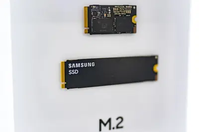
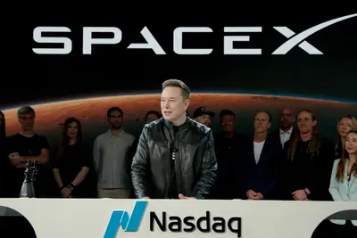
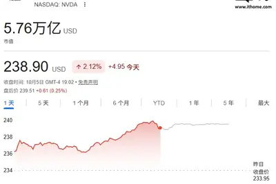
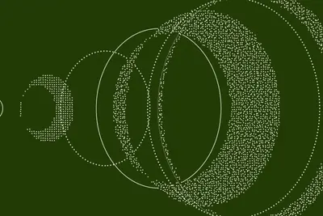
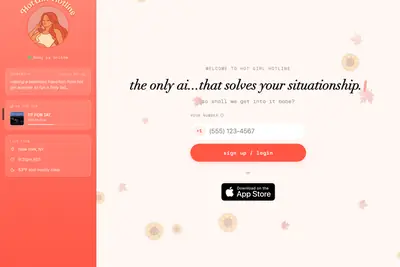
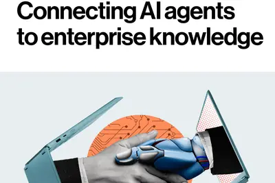

AI 每日新聞彙整
全部主題
其他
3 家媒體報導applemacosintel
Command-line tool quickly removes Apple Intelligence from macOS 27
The tool can free up over 12GB of storage.
3 家媒體報導adsopenaiappear
OpenAI launches visual ads that appear alongside image generation results
The new ads will begin to appear later this month in the U.S. only for now, and will feature products and services from an initial test group of advertisers.
2 家媒體報導geminigooglecall
Google Gemini 大縮水，免費用戶只可用 Flash-Lite、AI Plus 用戶不能再用 Pro 模型
Google 宣布由 10 月 9 日起，按訂閱方案調整個人帳號在 Gemini 應用程式可用模型。免費用戶只 […]
2 家媒體報導textchatgptwatermarking
OpenAI will start watermarking ChatGPT’s text in the EU
OpenAI will watermark ChatGPT and Codex text in the EU to comply with the AI Act. Editing can make the invisible marks harder to detect, it says.
2 家媒體報導mathematicsanthropicdrama
All the drama around AI’s takeover of mathematics
This past year, OpenAI, Anthropic, and other labs have announced breakthroughs on numerous long-standing mathematical problems, in some cases pushing well beyond what researchers expected current systems to be capable of — including resolving one of the famous Millennium Prize pr
- The Verge AI All the drama around AI’s takeover of mathematics
- IEEE Spectrum AI AI Solves a Major Unsolved Math Problem. Not Everyone Is Happy
2 家媒體報導mayroguewikimedia
Wikipedia operator says OpenAI’s ‘rogue’ bots may be linked to a May outage
Following many recent disclosures about AI agents accessing third-party websites and services, the Wikimedia Foundation, which hosts Wikipedia, says that it "can confirm that we have discovered some activity" by "rogue" OpenAI agents on Wikimedia platforms. The activity includes
pcb3.2sap
光模組邁3.2T世代掀PCB變革 SAP製程縮緊供應商剩3家
AI算力叢集規模持續擴大，跨機櫃間的Scale-out互連效率要求迅速攀升，推進傳統可插拔式光收發模組世代由800G升級至1.6T，並加速邁向未來的3.2T產品，牽動PCB從板材...
- DIGITIMES 光模組邁3.2T世代掀PCB變革 SAP製程縮緊供應商剩3家
samsungelectronicsdatacenter
搶攻AI資料中心冷卻商機 三星靠購併搶快、樂金押注自主技術
全球人工智慧（AI）資料中心熱管理市場快速成長，三星電子（Samsung Electronics）與樂金電子（LG Electronics）在冷卻領域採取截然不同的策略。三星選擇購併（M...

- DIGITIMES 搶攻AI資料中心冷卻商機 三星靠購併搶快、樂金押注自主技術
robotpetehegseth
五角大廈成立自主作戰司令部 美軍加速無人機自製與AI軍備
美國國防部長Pete Hegseth日前宣布成立新「自主作戰司令部」（Autonomous Warfare Command；AWC），並同步推動基於低成本製造、人工智慧（AI）與機器人技術的新...
- DIGITIMES 五角大廈成立自主作戰司令部 美軍加速無人機自製與AI軍備
603hbmfunding
南韓9月出口大暴衝 半導體狂捲603億美元撐起半邊天
人工智慧（AI）基礎設施投資熱潮持續推升記憶體與企業級固態硬碟（eSSD）需求，南韓出口再創歷史新高，2026年9月出口額達1,209.4億美元，單月首度突破1,200億美元，...
- DIGITIMES 南韓9月出口大暴衝 半導體狂捲603億美元撐起半邊天
samsungq26hbm
漲勢趨緩未必是榮景盡頭 三星3Q26財報將成關鍵風向球
人工智慧（AI）帶動的記憶體漲價潮出現分化，部分通用型DRAM與NAND Flash產品合約價持續創高，但漲幅明顯收斂，下游業者承受成本的能力也面臨考驗。不過，AI資料中...

- DIGITIMES 漲勢趨緩未必是榮景盡頭 三星3Q26財報將成關鍵風向球
nvidian...
區域製造墊高自動化需求 鴻海、NVIDIA攻AI硬體精密組裝
AI伺服器供應鏈加快「區域製造」布局，美國生產所面臨的人力取得、用工成本及產能擴充條件，使製造商必須提高自動化程度，才能兼顧交付速度與生產效率。也因此，鴻海與N...
- DIGITIMES 區域製造墊高自動化需求 鴻海、NVIDIA攻AI硬體精密組裝
datacenter
AI負載瞬間峰值對電網衝擊 學界擬改善固態電路保護元件
台灣有龐大的AI晶片設計製造及AI伺服器組裝產業，然而客戶端最大的絆腳石，就是能耗問題。國科會近日發出「次世代AI資料中心之高性能電源轉換與系統管理技術」徵求公...
- DIGITIMES AI負載瞬間峰值對電網衝擊 學界擬改善固態電路保護元件
ipoanthropicagent
Anthropic IPO說明書揭法律風險 AI代理出事責任難釐清
Anthropic在上市說明書指出，人工智慧（AI）自主能力進化，風險也跟著增加，但現有法律尚無法清楚界定AI代理失控的責任歸屬。
- DIGITIMES Anthropic IPO說明書揭法律風險 AI代理出事責任難釐清
381huawei
華為「韜定律」終端應用 余承東：381款τ晶片量產
當電晶體尺寸持續逼近物理極限，華為開始尋找不同於傳統製程微縮的半導體演進路徑。華為常務董事、暨終端BG董事長余承東近日表示，華為已在手機、AI、通用運算、網路...
- DIGITIMES 華為「韜定律」終端應用 余承東：381款τ晶片量產
hbmsamsunginterposer
HBM競爭升級系統熱管理 三星祭多重解方迎戰台積電
人工智慧（AI）晶片朝多晶粒與高密度整合發展，承載運算晶片與高頻寬記憶體（HBM）的中介層（interposer）也持續擴大。當單一封裝整合更多晶片，功耗與熱管理挑戰同...
- DIGITIMES HBM競爭升級系統熱管理 三星祭多重解方迎戰台積電
quotingfelixrieseberg
Quoting Felix Rieseberg
The "old" version of Cowork runs model inference in the cloud, executing tool calls in an Anthropic-provided VM we shipped to your computer. We added the VM for capability, safety, and security reasons - mapping in just the data you explicitly added to your session. People loved
- Simon Willison Quoting Felix Rieseberg
麦当劳在美遭集体诉讼，被指用 AI 系统非法操纵菜单价格
IT之家 10 月 6 日消息，据路透社报道，麦当劳已在芝加哥联邦法院被提起诉讼，这是一起拟议的全国性集体诉讼。原告指控这家快餐企业借助一套人工智能定价系统，非法协调其特许经营店和直营餐厅的菜单价格。 IT之家注意到，这起诉讼于当地时间上周五提交。诉状称，麦当劳与独立特许经营商合谋，利用基于非公开数据训练的算法操纵价格，此举违反了美国反垄断法。 路透社上周曾报道，麦当劳的定价引擎运用机器学习算法，持续分析其近 14,000 家门店每天数百万笔交易产生的数据。本次诉讼引用了这篇报道，报道当中还提到其他快餐企业也开始借助人工智能开展定价以及其他运营工作。 诉

AI 公司為了「放慢 AI 發展」而被告？
人工智慧演進速度極快，但當技術可能帶來安全風險時，科技公司可以一起踩煞車嗎？近期美國加州北區聯邦地方法院受理了 […]
- 科技新報 TechNews AI 公司為了「放慢 AI 發展」而被告？
anthropicerickauderer-abrams
Anthropic 布局生技領域，籲 AI 藥物研發需嚴守安全防線
Anthropic 生命科學負責人 Eric Kauderer-Abrams 近日受訪時表示，人工智慧（art […]
- 科技新報 TechNews Anthropic 布局生技領域，籲 AI 藥物研發需嚴守安全防線
geminicall
谷歌有望升级 Call for Me 功能：Gemini 将支持代用户拨打私人亲友电话
IT之家 10 月 6 日消息，有多少通电话，仅仅因为要跟其他人沟通实在太过麻烦，你就一拖再拖？人工智能早已承诺，会帮我们把生活里大量费力不讨好的杂事实现自动化。对于一部分人来说，其中最有吸引力的设想或许就是由 AI 替我们打电话。谷歌刚刚在 Pixel 11 系列手机上推出了“代我通话（Call for Me）”功能，而现在有迹象表明，这项功能可能将迎来一次重大功能拓展。 据IT之家了解，目前的代我通话专门设计用于拨打各类商户电话，它可以耐心听着等待接通的背景音乐，协助完成预约之类的事务。 听上去很不错，不过这项功能的适用范围还相当有限。既然 Gemi
sora300
丰田联合五十铃推出新款 Sora 氢燃料电池巴士，续航突破 300 公里
IT之家 10 月 6 日消息，丰田汽车于当地时间周一宣布，将推出新款 Sora 氢燃料电池巴士，续航里程超过 300 公里，相比老款车型提升约 100 公里。 据IT之家了解，丰田从 2018 年开始投放 Sora 巴士。新款车型由丰田与五十铃汽车联合开发，采用五十铃研发的巴士底盘平台，搭载丰田的燃料电池系统。 新款巴士同时使用燃料电池系统以及大容量电池，在实现更长续航的同时改善了车辆的使用性能。车内增设便于固定轮椅的装置，并且配备了最新的安全设备。燃料电池系统与氢气储罐布置在车顶，方便开展车辆维护作业。 五十铃同样在周一对外表示，将开始销售旗下首款燃
marie-hpelle
AI 焦慮壓垮高階主管，心理學家：2/3 個案問題與 AI 有關
隨著企業加速導入人工智慧，領導階層承受的壓力也同步升高。心理學家佩萊蒂耶（Marie-Hélène Pelle […]
- 科技新報 TechNews AI 焦慮壓垮高階主管，心理學家：2/3 個案問題與 AI 有關
spacexamazon7.6
SpaceX 股价大涨 7.6%，马斯克身家重回 1 万亿美元
IT之家 10 月 6 日消息，美东时间周一，SpaceX 股价大涨 7.6%，升至 6 月中旬以来最高水平，推动马斯克的身家重新超过 1 万亿美元 （IT之家注：现汇率约合 6.71 万亿元人民币） ，较上周五增加了 306 亿美元 （现汇率约合 2,053.37 亿元人民币） 。 这巩固了马斯克作为全球首富的地位，亚马逊创始人杰夫 · 贝索斯以 3,715 亿美元 （现汇率约合 2.49 万亿元人民币） 净资产位居遥远的第二。 马斯克此前在 SpaceX 首次在纳斯达克上市交易后的 6 月成为全球首位万亿富豪，不过数日后随着 SpaceX 和特斯拉的

英伟达美股连续 3 天创历史新高，本月市值有望冲击 6 万亿美元
IT之家 10 月 6 日消息，英伟达股价于美国东部时间 10 月 5 日星期一再度刷新历史纪录，收盘报 238.90 美元 （IT之家注：现汇率约合 1,603 元人民币） ，单日上涨 2.12%， 连续第三个交易日以收盘价创历史新高。 英伟达公司盘后交易进一步上行至约 239.54 美元 （现汇率约合 1,607 元人民币） （+0.27%），按收盘价计算，英伟达市值约 5.76 万亿美元 （现汇率约合 38.65 万亿元人民币） ，继续稳居全球市值最高上市公司。 10 月 5 日英伟达期权成交活跃，当日总成交量约 404.12 万张，其中看涨期权占

datacenternvidia
全球 IC 設計產業動態：持續兩極化的營收走勢
推升 2026 年第一季前十大廠商營收主要來自資料中心 / AI 相關需求，以輝達（NVIDIA）龐大的規模營 […]
- 科技新報 TechNews 全球 IC 設計產業動態：持續兩極化的營收走勢
edgeagentkpmg
AI Agent 斷網還能繼續動作，KPMG：Edge AI Agent 需要另一套治理方式
撰稿：廖紹伶 企業開始讓 AI Agent 不只回答問題，還能規劃任務、存取資料、呼叫工具，甚至直接執行動作後，AI 治理也變得更複雜，而到了「Edge AI Agent」，問題又多了一層。資料與部分運算留在企業內部或終端裝置，乍看之下似乎更安全，但當 Agent 同時取得端點上的資料與執行能力，即使與中央系統失去連線，也可能繼續動作。換句話說，「資料不上雲」不代表企業就比較容易掌控 Agent。 「Edge AI 的 Agent 相對會比較安全嗎？」KPMG 安侯企管數位創新服務副總經理張智淵在《科技報橘》主辦的 AI 智慧大工廠論壇中，就從這個問題切
- TechOrange 科技報橘 AI Agent 斷網還能繼續動作，KPMG：Edge AI Agent 需要另一套治理方式
protocolmcpagent-to-agent
MCP for agent-to-agent comms may be the riskiest protocol you've never heard of
Trust gaps in the new protocol spread malicious prompts from one agent to another.
tsmcxai
【科技早餐】台積電將助馬斯克營運德州晶圓廠？馬斯克證實洽談中
【科技早餐】今天精選 6 則國內外重要科技新聞。 ＊馬斯克證實與台積電洽談，晶圓廠合作仍未定案 馬斯克（Elon Musk）證實，旗下晶片計畫 Terafab 與台積電（TSMC）的合作仍在討論。據消息人士指出，台積電正評估協助 Terafab 營運德州新晶圓廠的可能性。馬斯克在社群平台 X 回應相關消息時表示，目前只是討論，但可能會有進展。現階段可確認的是雙方正在商談，合作模式與具體安排仍待說明。 另外，馬斯克表示，將把太空探索科技公司（SpaceX）旗下 AI 部門的名稱，從 SpaceXAI 改為 SpaceXSI，呼應美國總統川普以「超級智慧」（
- TechOrange 科技報橘 【科技早餐】台積電將助馬斯克營運德州晶圓廠？馬斯克證實洽談中
acnestartupissuing
This startup is issuing AI-generated acne prescriptions
People in Utah can now use AI to get a prescription for acne treatment. On Monday, healthcare startup Nolla Health announced that users in the state can scan their faces using its app, allowing its AI system to analyze acne severity and autonomously write a prescription, as repor
reflectionbeammodels
Reflection debuts Beam, an open-weight AI model to rival Chinese models at lower compute cost
Reflection is aiming Beam and future models at enterprises and sovereign nations. The pitch is to build “AI factories,” a product that would let institutions build their own customized, local AI system by training Reflection’s AI models on their own proprietary data.

instinctchatsgroup
Instinct brings its AI agent to group chats, even for friends without an account
Instinct is launching group chats that let friends use its AI agent together for tasks like planning trips, organizing carpools, and coordinating events. The company says personal accounts remain separate, with permission required before personal agents share information or take
bytedancetiktokshopping
TikTok rolls out an AI shopping assistant and one-click checkout
TikTok describes its new Shopping Assistant as a conversational AI agent designed to help users discover and purchase products.
guidelinesgoverningbuilt
6 Guidelines for Governing AI
For the first 10 years of my career, I worked in product management and data analytics by myself. I wrote database queries that pulled numbers out of corporate systems, built statistical models to predict what customers would buy, and shipped data pipelines that moved information
- IEEE Spectrum AI 6 Guidelines for Governing AI
hotgirlhotline
Hot Girl Hotline is like ‘Dear Abby’ for the AI era
Founded by two sisters, Hot Girl Hotline uses AI to give young women personalized dating and relationship advice, with an emphasis on safety and avoiding emotional dependency.

- TechCrunch AI Hot Girl Hotline is like ‘Dear Abby’ for the AI era
badthingssam
Sam Altman says ‘some bad things’ will happen, but AI is totally worth it
Sam Altman thinks that the benefits of AI will be so great that "the world should accept some bad things happening" along the way. The OpenAI CEO pointed to hacks, scams, and "other bad things" as costs society should expect to tolerate because "people will do tremendously orders
hackerrankinterviewerinterviews
HackerRank’s AI interviewer offers a glimpse into what job interviews could become
HackerRank’s AI interviewer has already conducted more than 500,000 interviews, with Snowflake, Snorkel, and Capgemini among its early testers.
codexregulationapi
OpenAI 将在欧盟为 ChatGPT 和 Codex 文本输出添加隐形水印
IT之家 10 月 5 日消息，OpenAI 今日宣布，为配合《欧盟人工智能法案》的内容透明要求，未来几周将在欧盟地区符合条件的 ChatGPT 和 Codex 文本输出中加入机器可识别的隐形水印。 据介绍，文本水印技术名为 textGrain（文本粒水印） ，会在模型选词过程中嵌入不可见的统计信号。检测器通过识别该信号，判断一段文本是否带有 OpenAI 水印。 IT之家注意到，OpenAI 下一步将在欧盟推广文本水印。未来几周，团队将仅在欧盟所有计划中向符合条件的 ChatGPT 和 Codex 用户引入文本水印功能。值得一提的是，OpenAI 不会
knowledgeagentsenterprise
Connecting AI agents to enterprise knowledge
For all the data that AI systems continually amass and analyze, enterprise AI agents often suffer from a curious shortcoming: a lack of knowledge. More than data, knowledge is the understanding of what the data means in the context of individual organizations. AI agents need this

- MIT Technology Review AI Connecting AI agents to enterprise knowledge
disrupttechcrunch2026
Open or closed AI? How founders are choosing what to build on at TechCrunch Disrupt 2026
Learn how founders are choosing between building on open or closed AI at TechCrunch Disrupt 2026. Register now to save up to $100 and get a second pass at 50% off.
- TechCrunch AI Open or closed AI? How founders are choosing what to build on at TechCrunch Disrupt 2026
- TechCrunch AI Meet the Startup Battlefield 200 judges who’ll decide the winner at TechCrunch Disrupt 2026
- TechCrunch AI The final Disrupt Stage lineup: Three days of conversations you won’t hear anywhere outside of TechCrunch Disrupt 2026